Radiometrische Sensorkalibrierung
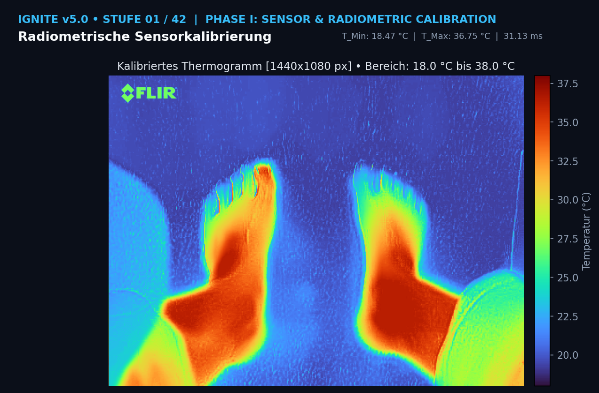
T(x,y) = T_{\text{min}} + \frac{I(x,y)}{255} \cdot (T_{\text{max}} - T_{\text{min}})
Konvertiert die unkalibrierten Roh-Sensorpixel in physikalische Absoluttemperaturen (°C) gemäß Kalibrierkurve des LWIR-Sensors.
Dead-Pixel-Erkennung & Interpolation
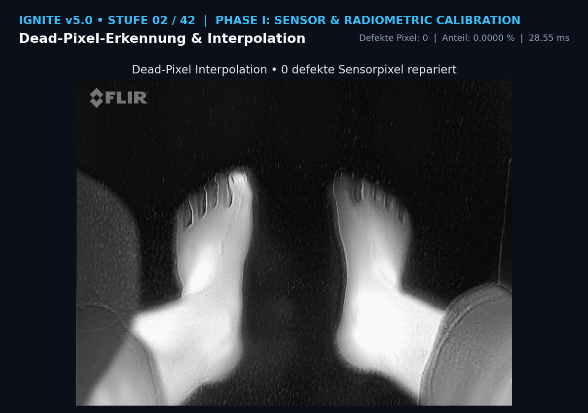
\text{BadPixel} = (I == 0) \lor (I == 255), \quad T_{\text{clean}} = \text{Median}_{3\times 3}(T)
Detektiert Sensor-Ausfälle (Dead Pixels bei 0 oder 255) und korrigiert diese durch lokale 3x3-Nachbarschafts-Interpolation.
Anisotrope Bilaterale Rauschfilterung
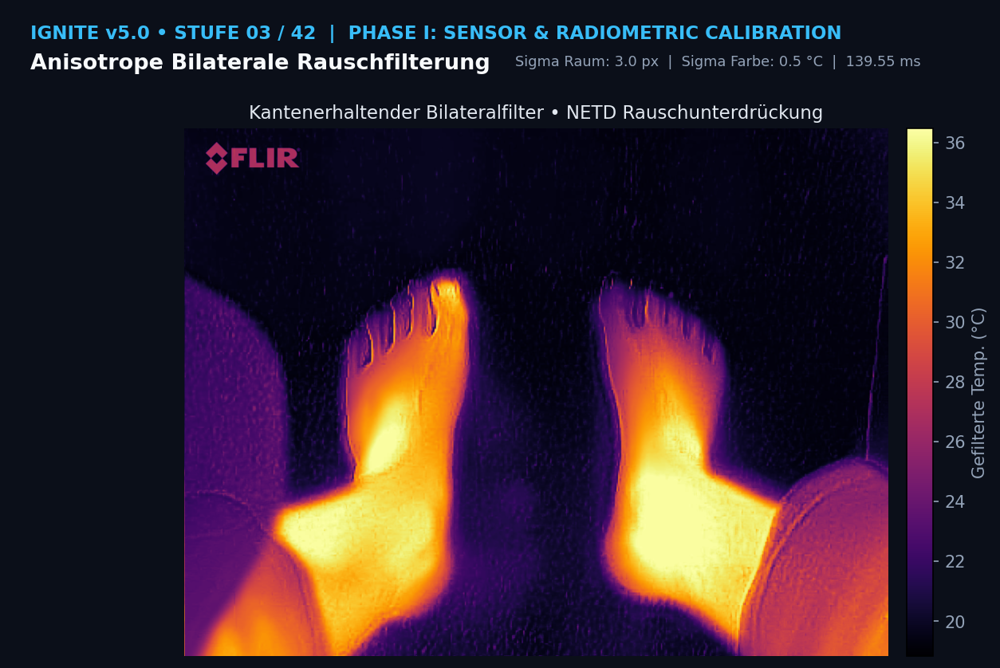
I_{\text{filt}}(p) = \frac{1}{W_p} \sum_{q} I(q) \cdot \exp\left(-\frac{\|p-q\|^2}{2\sigma_s^2}\right) \cdot \exp\left(-\frac{\|I_p - I_q\|^2}{2\sigma_r^2}\right)
Unterdrückt stochastisches NETD-Sensorrauschen (Noise Equivalent Temp Difference), ohne pathologische Temperaturkanten zu verwischen.
Räumliche Gitterstandardisierung
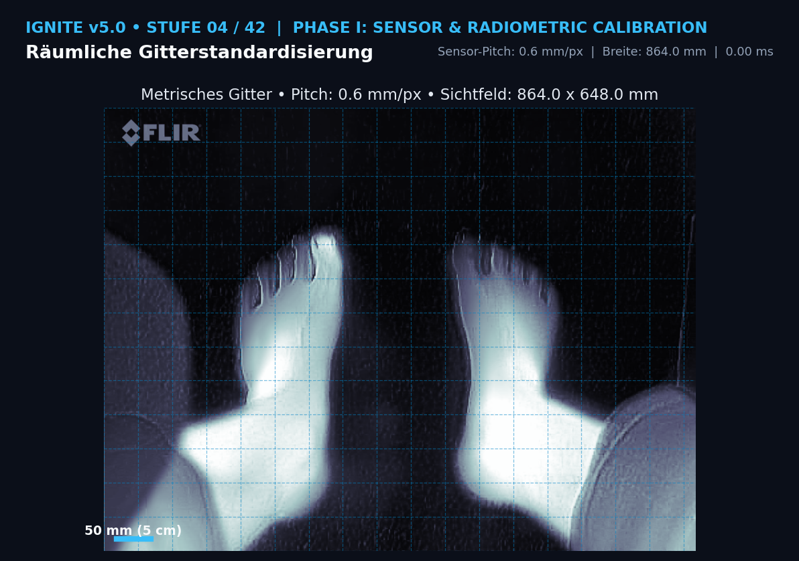
\text{Pitch} = 0{,}6\,\text{mm/px}, \quad \text{Fläche}(A) = \text{Pixelanzahl} \cdot \text{Pitch}^2
Kalibriert das Pixelkoordinatensystem auf metrische Einheiten (0.6 mm/Pixel) für normgerechte Wundflächenvermessung nach DIN EN ISO 13485.
Stefan-Boltzmann Drift-Kompensation
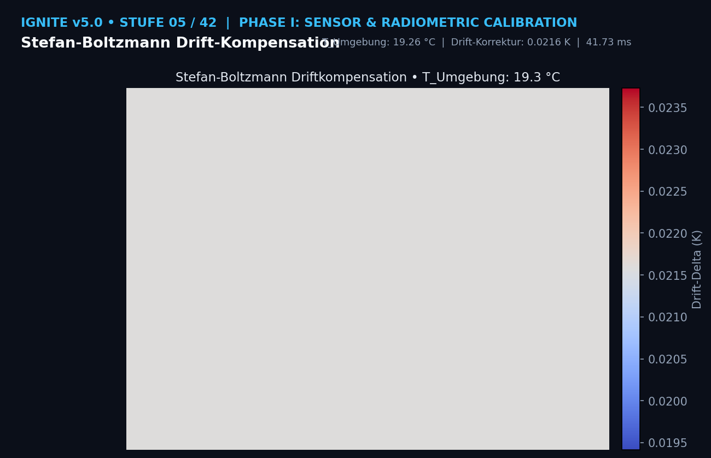
P = \varepsilon \cdot \sigma \cdot T^4, \quad T_{\text{drift-corr}} = T - \alpha \cdot (T - T_{\text{amb}})
Kompensiert thermische Sensor-Eigenerwärmung und langwellige Hintergrundstrahlung basierend auf dem Stefan-Boltzmann-Gesetz.
Dynamisches Kontrast-Stretching
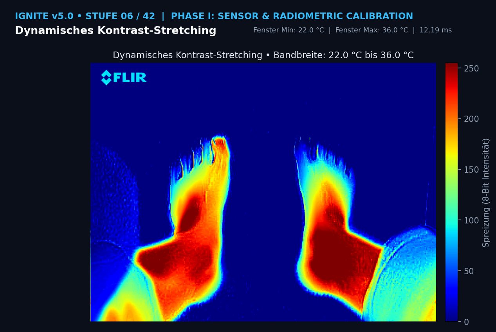
I_{\text{stretch}} = \text{clip}\left(\frac{T - T_{\text{low}}}{T_{\text{high}} - T_{\text{low}}} \cdot 255,\, 0,\, 255\right)
Spreizt den 8-Bit Dynamikbereich exakt über das biologisch relevante Gewebeband (22–36 °C), um subtilste Entzündungsgradienten sichtbar zu machen.
Multi-Otsu Binarisierung
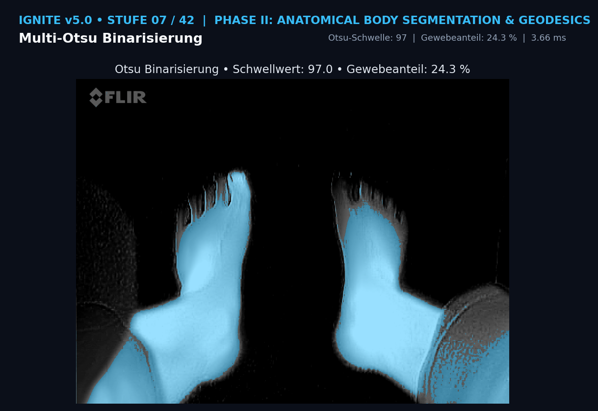
\sigma_B^2(t) = \omega_0(t)\omega_1(t)[\mu_0(t) - \mu_1(t)]^2, \quad t^* = \arg\max_t \sigma_B^2(t)
Deterministische Trennung von biologischem Gewebe und Raumhintergrund durch Maximierung der Inter-Klassen-Varianz σ_B².
Adaptiver Hypothermie-Fallback
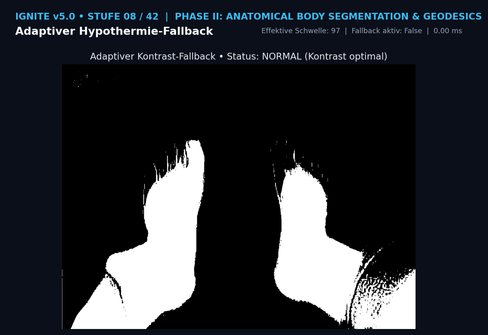
t_{\text{adapt}} = \begin{cases} 0{,}75 \cdot t^* & \text{falls } \frac{A_{\text{tissue}}}{A_{\text{total}}} < 0{,}15 \\ t^* & \text{sonst} \end{cases}
Prüft, ob periphere Zehenbereiche durch extreme Abkühlung verloren gehen, und passt den Schwellwert dynamisch an.
Connected Components Analyse
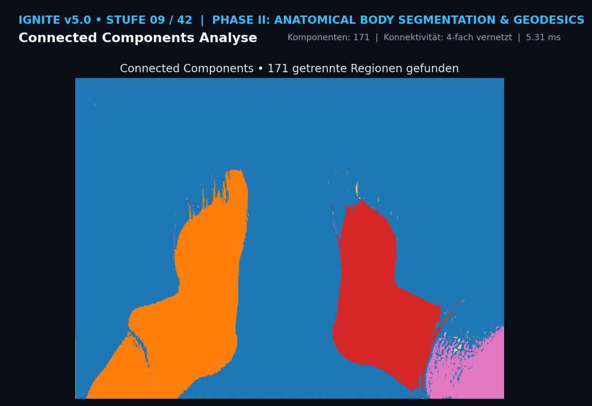
\mathcal{C}_k = \{ p \in \Omega \mid \exists\,\text{4-Weg-Pfad zu } q \in \mathcal{C}_k \}
Isoliert alle anatomischen Gewebestrukturen mittels 4-Wege Breiten-Graphsuche (BFS) in diskrete Zusammenhangskomponenten.
Bedding & Clutter Purge
\text{Purge}(\mathcal{C}_k) \iff \text{Area}(\mathcal{C}_k) < 0{,}02 \cdot (W \times H)
Filtert Untersuchungsliegen, Tücher und Sensorartefakte aus, die weniger als 2% des Bildes einnehmen.
Chamfer-L2 Distanzfeld
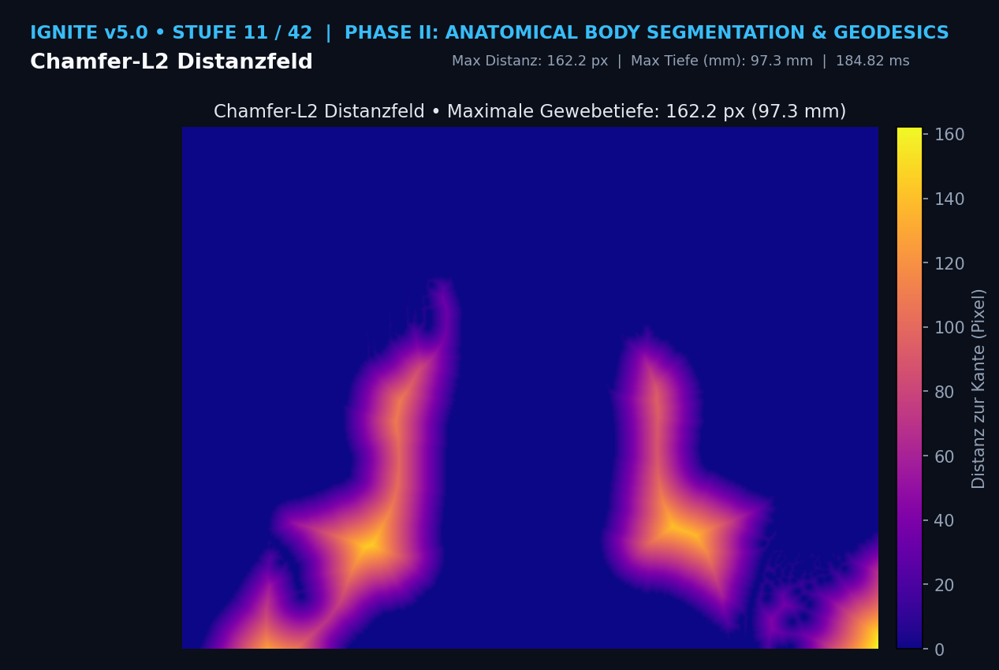
D(x,y) = \min_{(x',y') \in \partial \Omega} \sqrt{(x - x')^2 + (y - y')^2}
Berechnet das exakte euklidische Distanzfeld vom Gewebeinneren zu den Hauträndern für geodätische Erosion und 3D-Rekonstruktion.
Sub-Prozent Kanten-Erosion
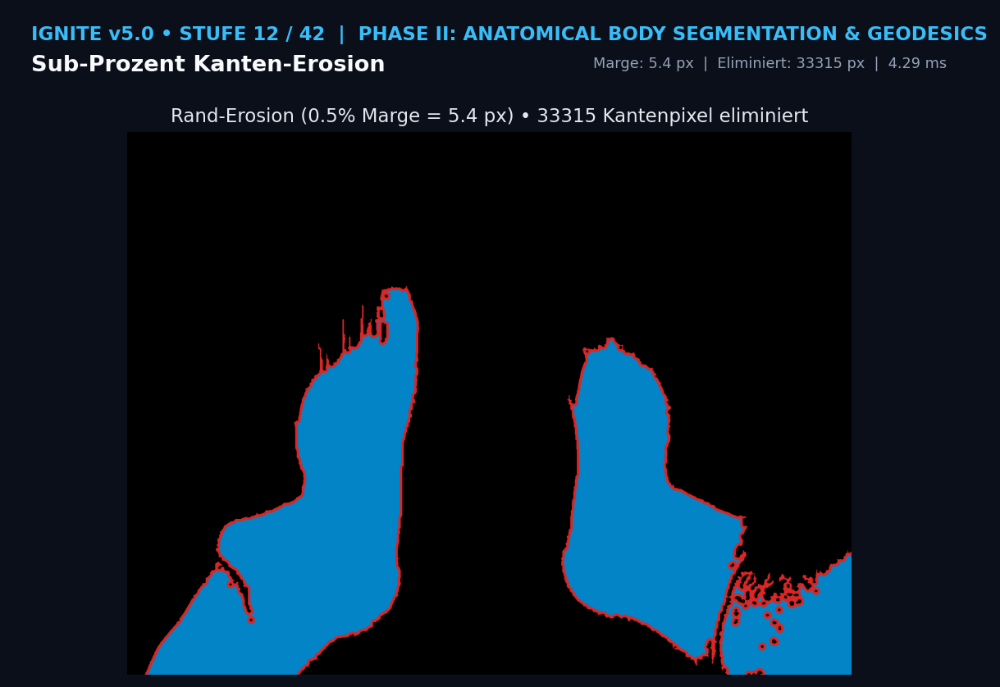
\mathcal{M}_{\text{eroded}} = \{ (x,y) \mid D(x,y) \ge \alpha \cdot \min(W, H) \}, \quad \alpha = 0{,}005
Schneidet eine mikroskopische Randzone (0.5% = Randreflexionen) ab, ohne dabei die filigranen Zehenspitzen zu verlieren.
Shape-from-Silhouette 3D-Tiefenmodell
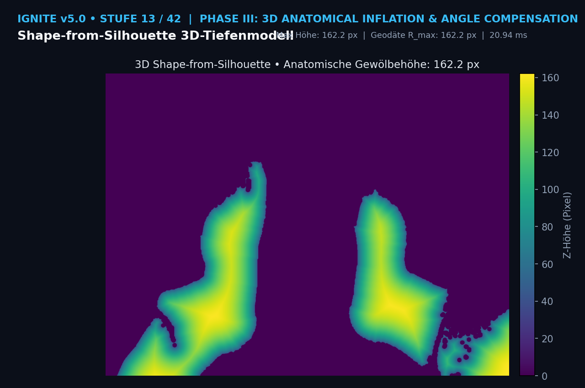
Z(x,y) = R_{\max} \cdot \sqrt{1 - \left(1 - \frac{D(x,y)}{R_{\max}}\right)^2}
Rekonstruiert die dreidimensionale anatomische Wölbung Z(x, y) des Fußes anhand der euklidischen Randgeodäten.
3D-Oberflächennormalen
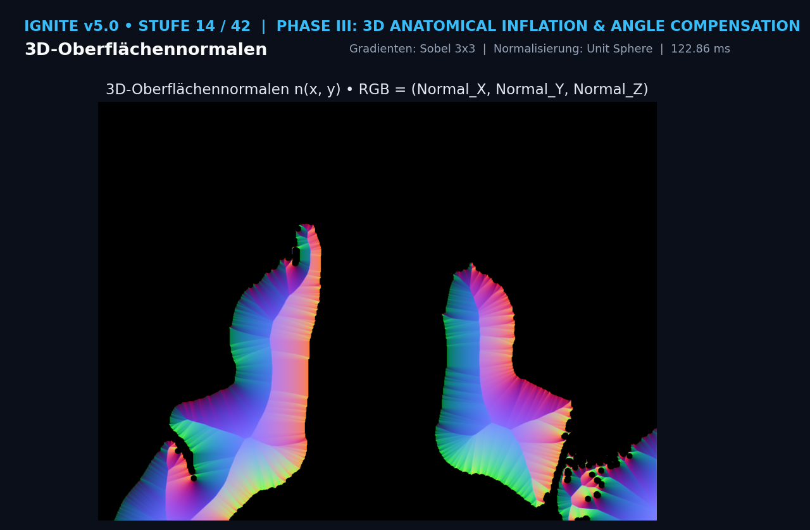
\vec{n}(x,y) = \frac{\left( -\frac{\partial Z}{\partial x}, -\frac{\partial Z}{\partial y}, 1 \right)^T}{\sqrt{\left(\frac{\partial Z}{\partial x}\right)^2 + \left(\frac{\partial Z}{\partial y}\right)^2 + 1}}
Ermittelt die Ausrichtung jedes mikroskopischen Hautareals im 3D-Raum mittels partieller Ableitungen der Tiefenfunktion.
Kosinus-Blickwinkelfeld
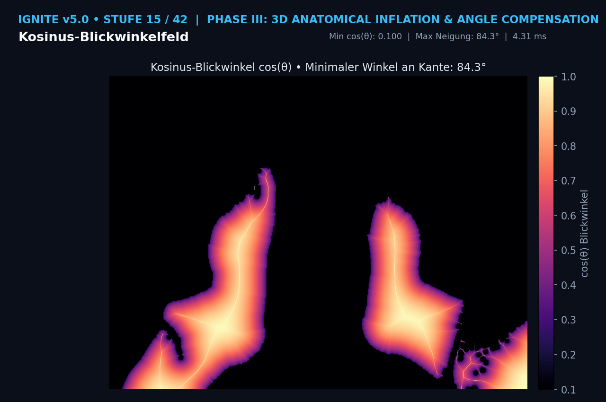
\cos\theta = \frac{\vec{n} \cdot \vec{v}}{\|\vec{n}\| \|\vec{v}\|} = n_z(x,y)
Quantifiziert den optischen Einfallswinkel θ zwischen Kameraachse und gekrümmter Hautoberfläche nach dem Lambert'schen Gesetz.
LWIR Fresnel-Emissivitätsmodellierung
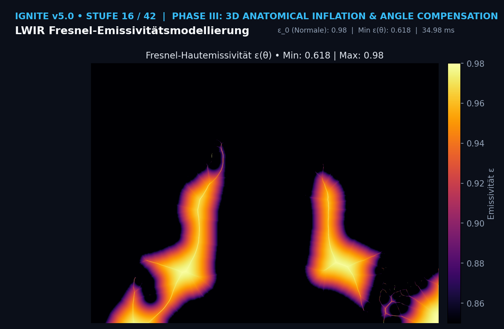
\varepsilon(\theta) = \varepsilon_0 \cdot \cos^p(\theta), \quad \varepsilon_0 = 0{,}98, \quad p = 0{,}2
Modelliert den physikalischen Abfall der Wärmeabstrahlung an gekrümmten Körpergrenzen nach den elektrodynamischen Fresnel-Formeln.
Tangentiale Kosinus-Kompensation
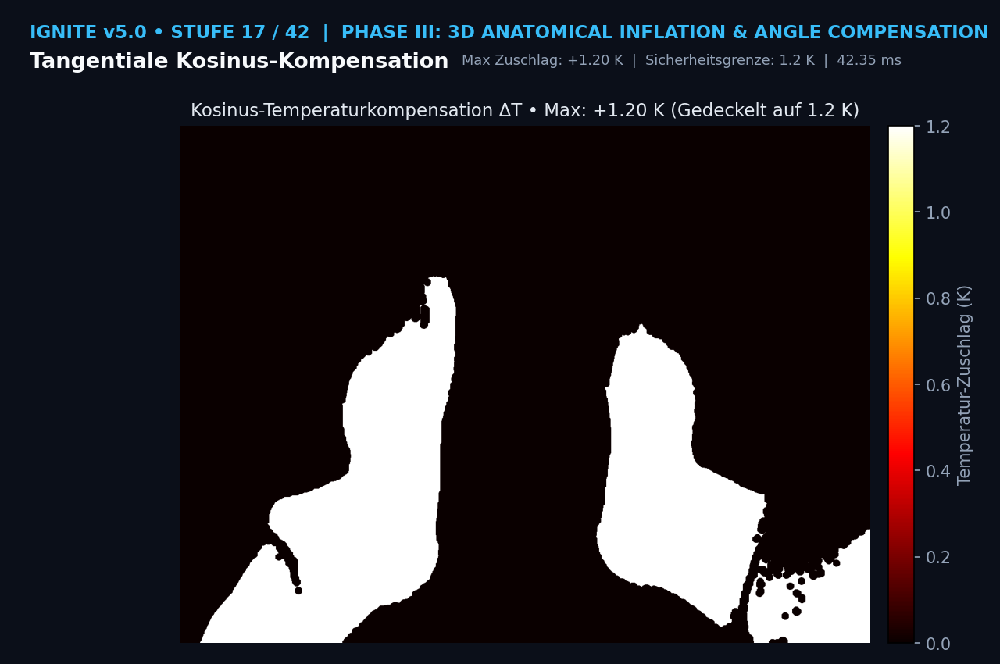
\Delta T_{\text{corr}} = \min\left(1{,}2\,\text{K},\, (T + 273{,}15) \cdot \left(\frac{1}{\sqrt[4]{\varepsilon(\theta)}} - 1\right)\right)
Berechnet den mathematischen Temperaturzuschlag für schräg geneigte Randbezirke mit Sicherheitsdeckelung auf maximal 1.2 K.
Winkelkorrigierte Thermomatrix
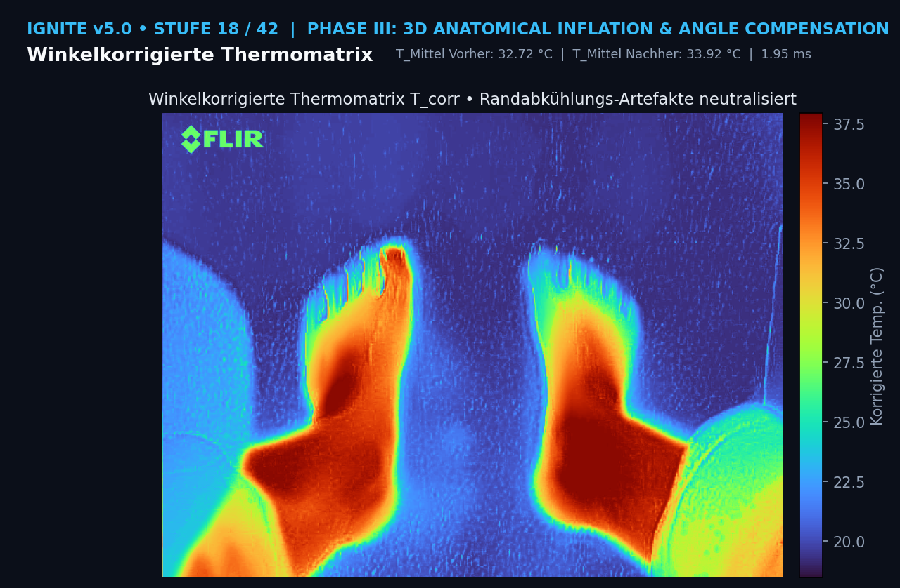
T_{\text{corr}}(x,y) = T_{\text{apparent}}(x,y) + \Delta T_{\text{corr}}(x,y)
Liefert die physikalisch bereinigte Temperaturverteilung, bei der die durch 3D-Körperkrümmung bedingte Scheinkühlung eliminiert ist.
Dynamische Kerngrößen-Berechnung
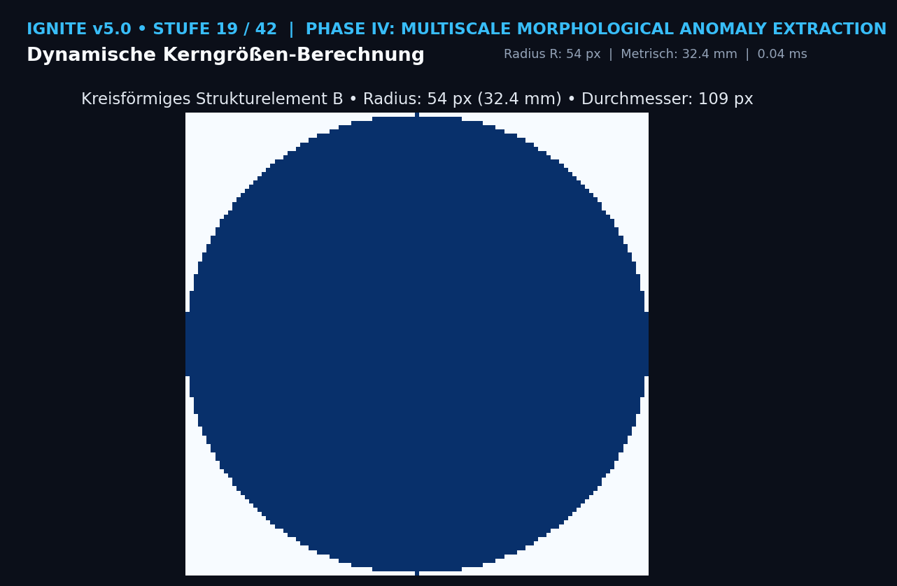
R = \max\left(15,\, \lfloor 0{,}05 \cdot \min(W, H) \rfloor\right), \quad B = \mathcal{B}_{R}(0)
Skaliert das morphologische Strukturelement B proportional zur Auflösung, um physiologische Hintergrundgradienten sauber zu erfassen.
1D Horizontale Minkowski Erosion
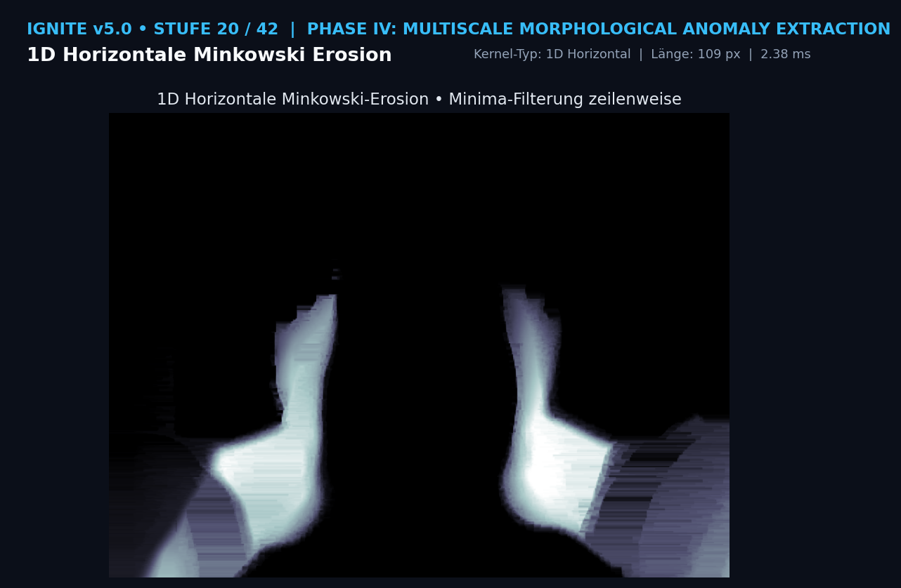
\mathcal{E}_H(I)(x,y) = \min_{-R \le k \le R} I(x+k, y)
Erste Stufe der separablen morphologischen Erosion: Findet das horizontale lokale Minimum über 2R+1 Pixel.
1D Vertikale Minkowski Erosion
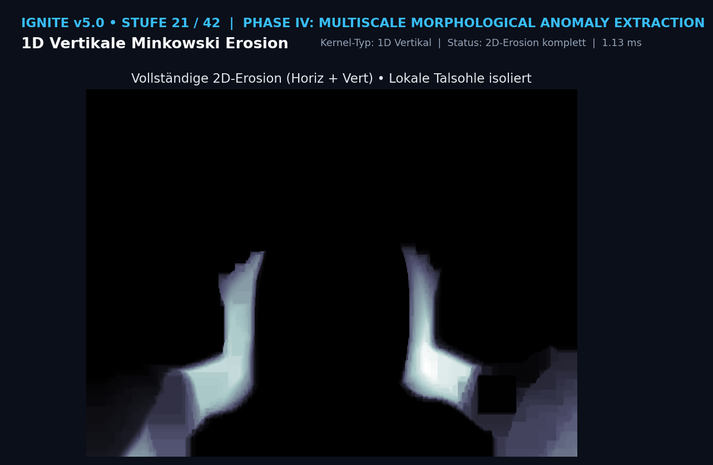
\mathcal{E}_B(I)(x,y) = \mathcal{E}_V(\mathcal{E}_H(I))(x,y) = \min_{(u,v) \in B} I(x+u, y+v)
Zweite Stufe der separablen Erosion: Liefert die vollständige zweidimensionale morphologische Talsohle.
1D Horizontale Minkowski Dilation
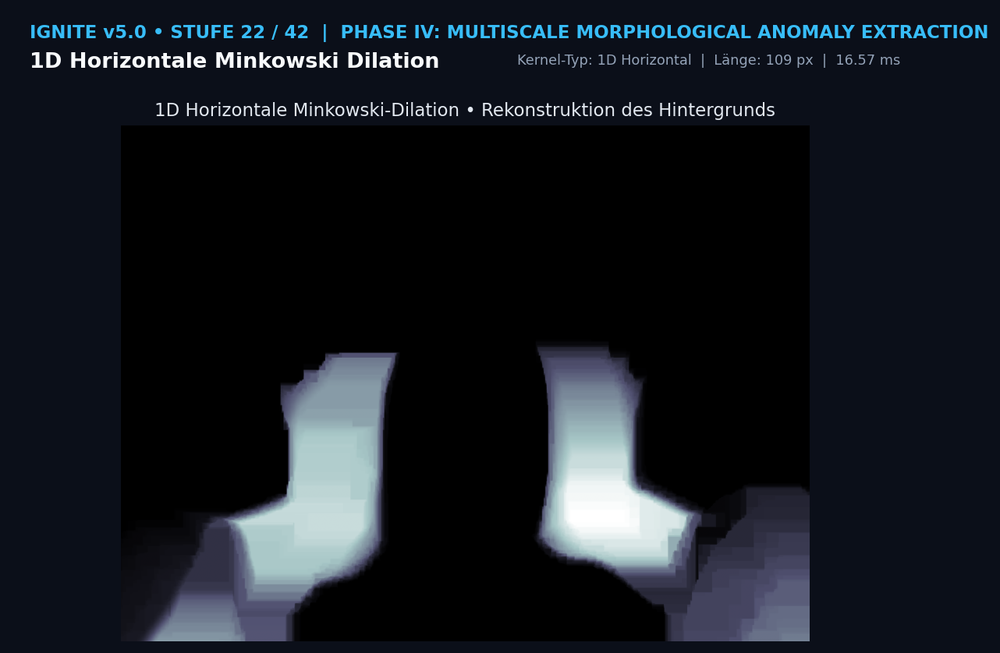
\mathcal{D}_H(\mathcal{E}_B(I))(x,y) = \max_{-R \le k \le R} \mathcal{E}_B(I)(x+k, y)
Erste Stufe der Dilation auf dem erodierten Bild zur Rekonstruktion der großflächigen thermischen Grundlast.
1D Vertikale Minkowski Dilation
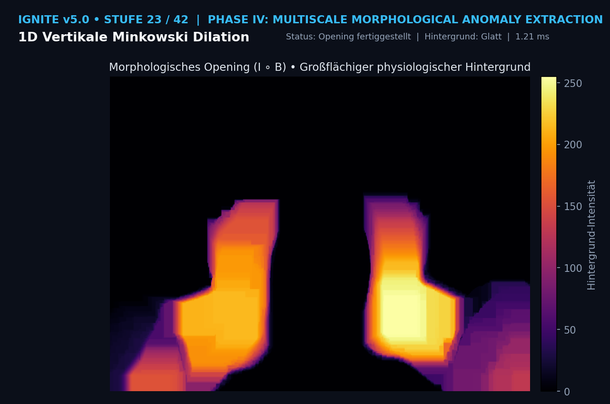
(I \circ B)(x,y) = \mathcal{D}_B(\mathcal{E}_B(I))(x,y)
Schließt das morphologische Opening ab: Glattes Hintergrund-Temperaturfeld ohne fokale Hotspots.
Morphologischer White Top-Hat
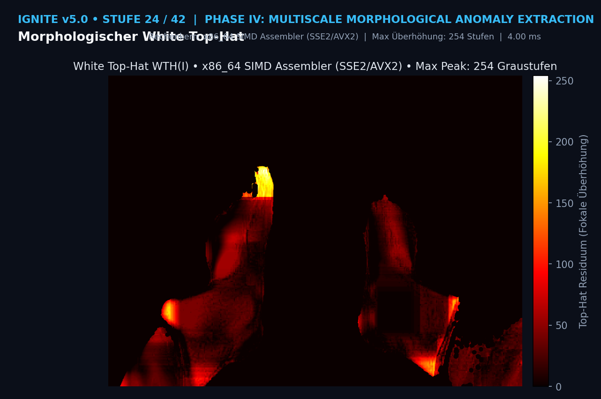
\text{WTH}(I) = I - (I \circ B) = \text{VPSUBUSB}(I,\, I \circ B)
Subtrahiert das Opening vom Original mittels x86-64 SIMD Assembler (VPSUBUSB / PSUBUSB): Isoliert alle fokalen Entzündungsherde bit-identisch!
256-Bin Gewebe-Histogramm
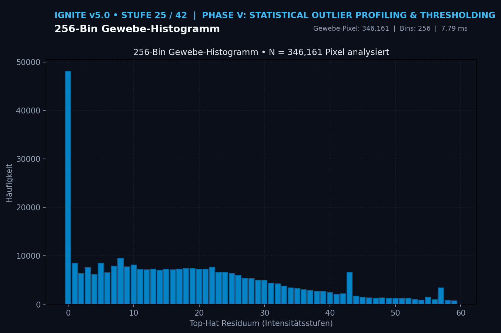
h(v) = \sum_{(x,y) \in \mathcal{M}} \delta(\text{WTH}(x,y) - v), \quad v \in [0, 255]
Erfasst die diskrete Verteilung aller Top-Hat Überhöhungen ausschließlich über physiologischem Gewebe (ohne Hintergrundverzerrung).
Exakter O(N) Median
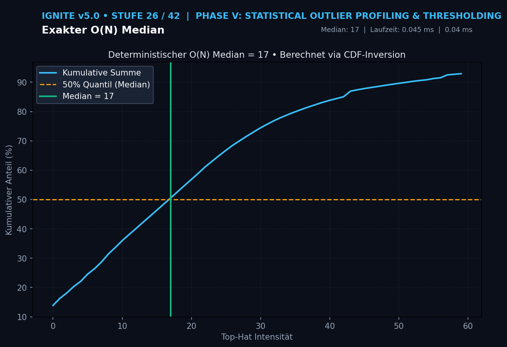
\text{Median} = \min \left\{ v \ \middle|\ \sum_{i=0}^v h(i) \ge \frac{N}{2} \right\}
Ermittelt das 50%-Quantil in O(N)-Zeit über die kumulative Verteilungsfunktion — immun gegen einzelne extreme Entzündungsherde.
Hampel-MAD Skalenschätzung
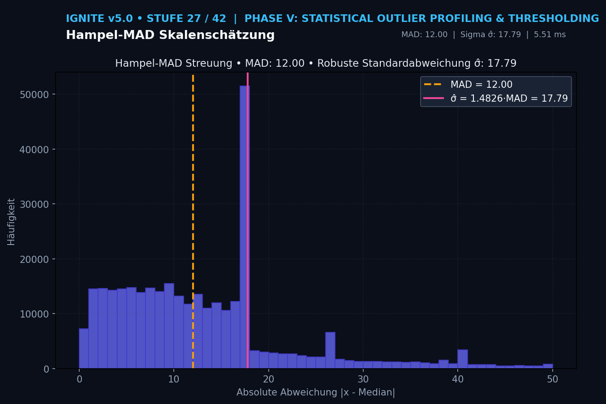
\text{MAD} = \text{median}(|x_i - \text{Median}|), \quad \hat{\sigma} = 1{,}4826 \cdot \text{MAD}
Berechnet die Median Absolute Deviation (MAD): Verhindert Maskierungsfehler (Swamping & Masking) durch floride Entzündungsareale.
Biologischer Temperaturboden
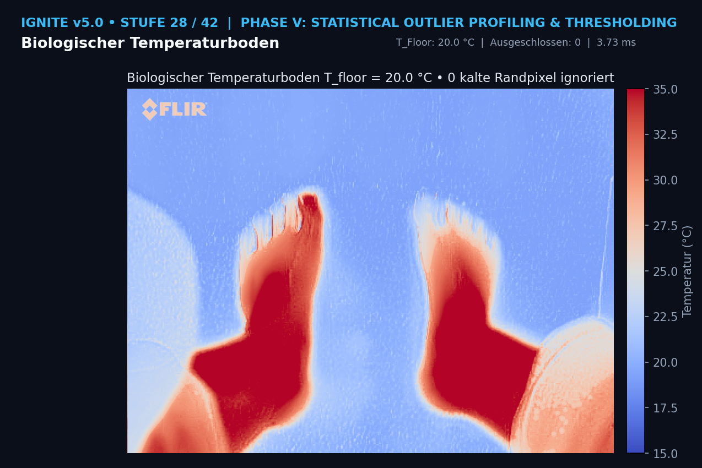
\mathcal{M}_{\text{valid}} = \mathcal{M}_{\text{tissue}} \cap \{ (x,y) \mid T(x,y) \ge T_{\text{floor}} \}, \quad T_{\text{floor}} = 20{,}0\,^\circ\text{C}
Schließt kalte Randzonen und ischämisch abgestorbene Randartefakte unterhalb von 20 °C vor der Schwellwertbildung aus.
Vektorisierter Schwellwertvergleich
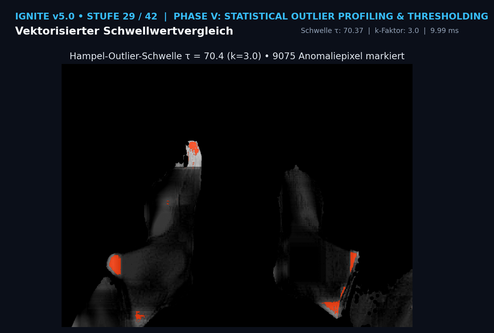
\tau = \text{Median} + k \cdot \hat{\sigma}, \quad \mathcal{A}_{\text{raw}} = \{ (x,y) \mid \text{WTH}(x,y) \ge \tau \}
Extrahiert statistisch signifikante Hyperthermiepunkte mit k=3.0 (99.7% Konfidenzniveau nach Gauß / Hampel).
Geodätische Hysterese-Rekonstruktion
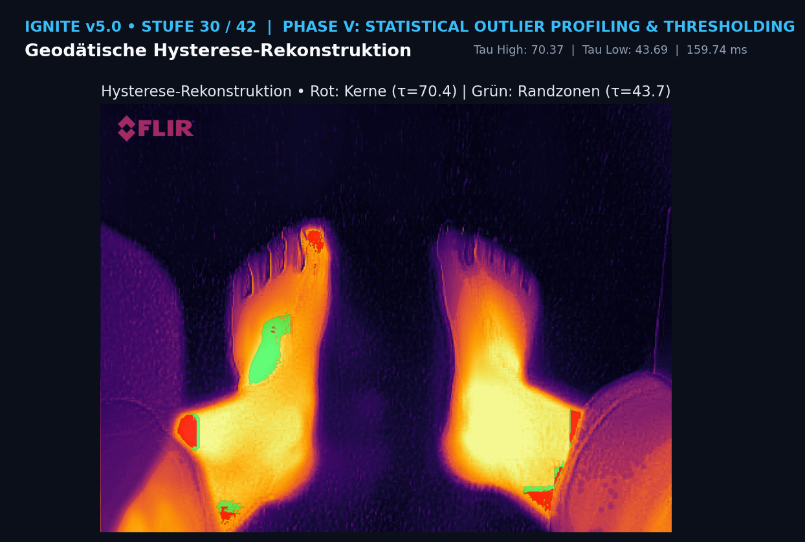
\mathcal{A}_{\text{hyst}} = \mathcal{R}_{\mathcal{A}_{\text{low}}}(\mathcal{A}_{\text{high}}), \quad \tau_{\text{low}} = \text{Med} + 1{,}5\hat{\sigma}
Vollständige Konturerfassung durch morphologische Hysterese: Verbindet starke Entzündungskerne mit ihren subklinischen Randzonen.
BFS-Clusterung der Anomalie-Regionen
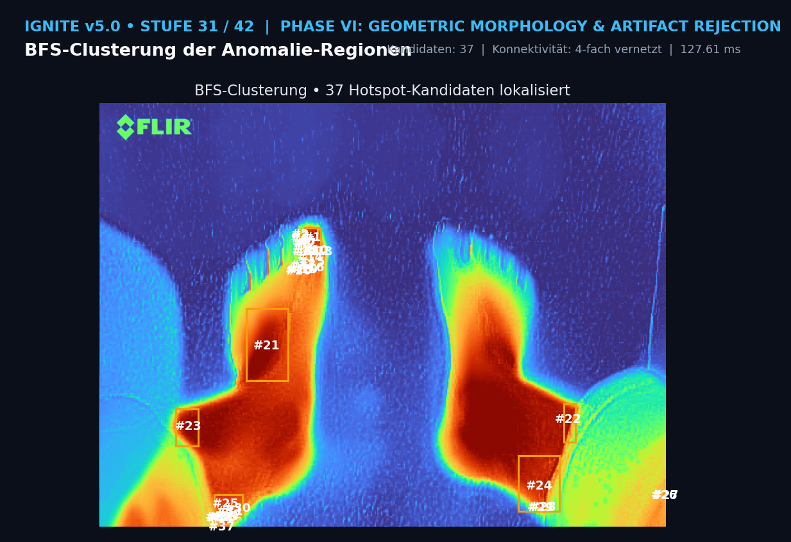
\mathcal{R}_k = \{ p \mid \text{Labels}(p) = k \}, \quad \text{Centroid} = \frac{1}{|\mathcal{R}_k|} \sum_{p \in \mathcal{R}_k} p
Fasst zusammenhängende Hyperthermie-Pixel mittels 4-Wege BFS in diskrete anatomische Befund-Kandidaten zusammen.
Flächenfilterung gegen Rauschen
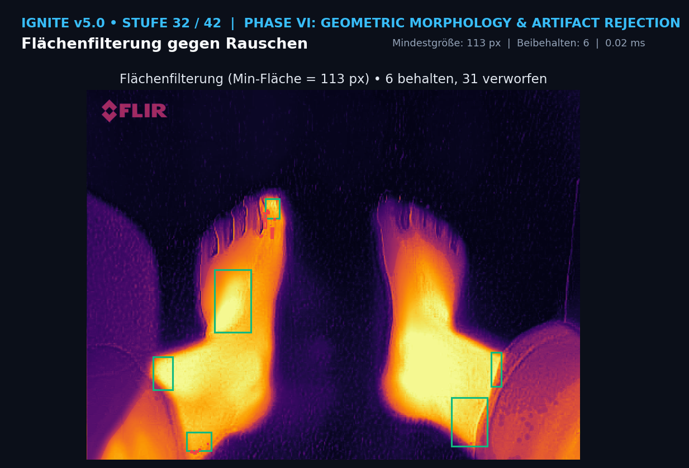
\text{Keep}(\mathcal{R}_k) \iff \text{Area}(\mathcal{R}_k) \ge 0{,}0003 \cdot N_{\text{tissue}}
Filtert mikroskopische Einzelpixel-Artefakte unterhalb von 0.03% der Fußgewebefläche aus.
Zirkularitäts-Prüfung
C = \frac{4\pi \cdot \text{Area}}{\text{Perimeter}^2} \ge 0{,}08
Unterscheidet kreisförmige pathologische Druckstellen (hohe Zirkularität) von langgestreckten Venen (niedrige Zirkularität).
Sensorrand-Ausschluss
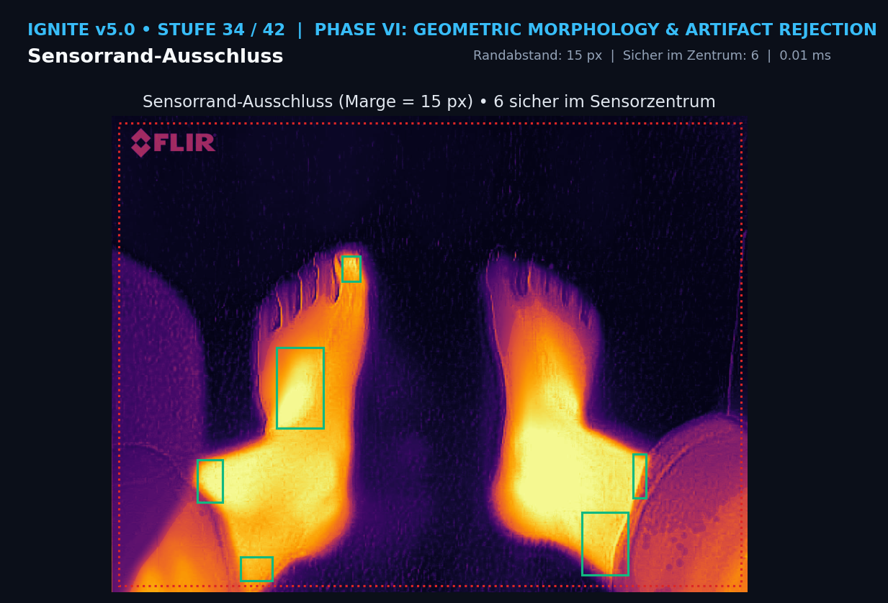
\text{Valid}(\mathcal{R}_k) \iff \text{BBox}(\mathcal{R}_k) \subset [b_{\text{px}},\, W - b_{\text{px}}] \times [b_{\text{px}},\, H - b_{\text{px}}]
Schließt Randartefakte und Vignettierungseffekte an den Kanten des Bolometer-Sensors aus.
2D-Hesse-Matrix-Zerlegung
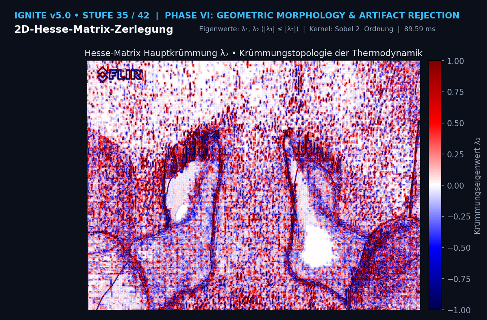
\mathcal{H} = \begin{bmatrix} I_{xx} & I_{xy} \\ I_{xy} & I_{yy} \end{bmatrix}, \quad \det(\mathcal{H} - \lambda \mathcal{I}) = 0
Berechnet die lokalen Krümmungseigenwerte λ₁, λ₂ der Temperaturfunktion zur morphologischen Gefäß- und Herdklassifikation.
Multiskalen Frangi-Filterung
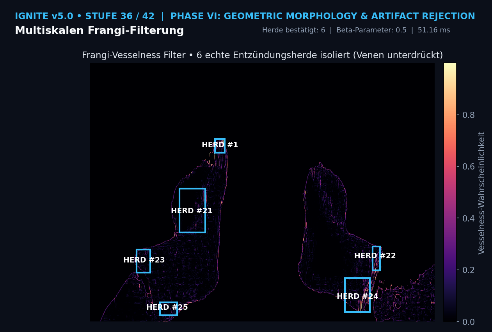
\mathcal{V}(\sigma) = \begin{cases} 0 & \text{falls } \lambda_2 > 0 \\ \exp\left(-\frac{R_B^2}{2\beta^2}\right) \left(1 - \exp\left(-\frac{S^2}{2c^2}\right)\right) & \text{sonst} \end{cases}
Unterdrückt physiologische Venennetze (Vesselness) zugunsten echter zirkulärer Entzündungsherde unter Druckstellen.
Perifokaler Randgradient
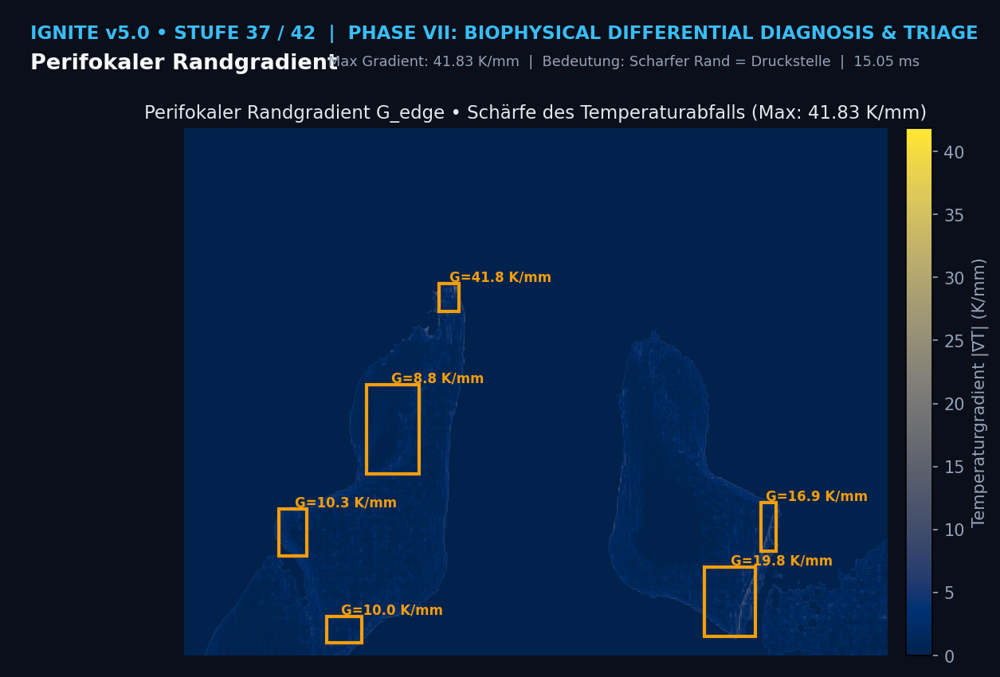
G_{\text{edge}} = \|\nabla T(x,y)\| = \sqrt{\left(\frac{\partial T}{\partial x}\right)^2 + \left(\frac{\partial T}{\partial y}\right)^2}
Analysiert die Steilheit des thermischen Randabfalls dT/dr: Scharfe Kanten weisen auf mechanische Druckulzera hin, weiche Verläufe auf diffuse Entzündungen.
Vasodilatations-Haloanalyse
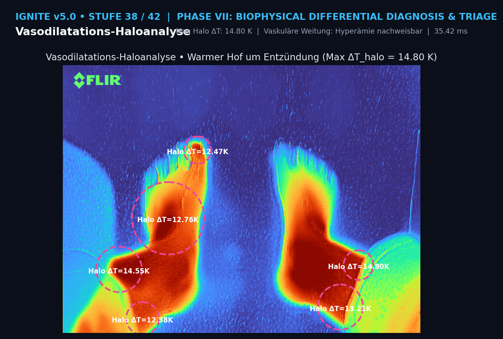
\Delta T_{\text{halo}} = \bar{T}_{\text{ring}}(r_{\text{in}}, r_{\text{out}}) - T_{\text{physiol}}
Quantifiziert den vasodilatatorischen Wärmehof (Hyperämie durch Stickstoffmonoxid / Zytokine) in der perifokalen Gewebemanschette.
2D-Laplace Divergenzanalyse
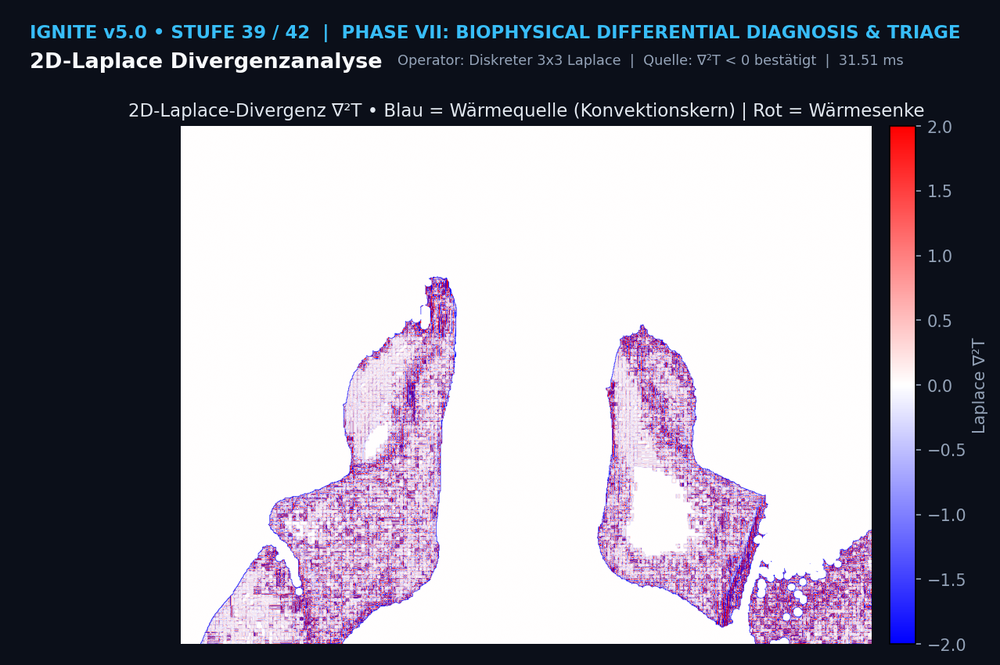
\nabla^2 T = \frac{\partial^2 T}{\partial x^2} + \frac{\partial^2 T}{\partial y^2} < 0 \implies \text{Lokale Wärmequelle}
Bestätigt mittels Divergenzoperator ∇²T, ob ein Herd als biophysikalische Wärmequelle (lokale Stoffwechselsteigerung) fungiert.
Homologer Armstrong-Seitenvergleich
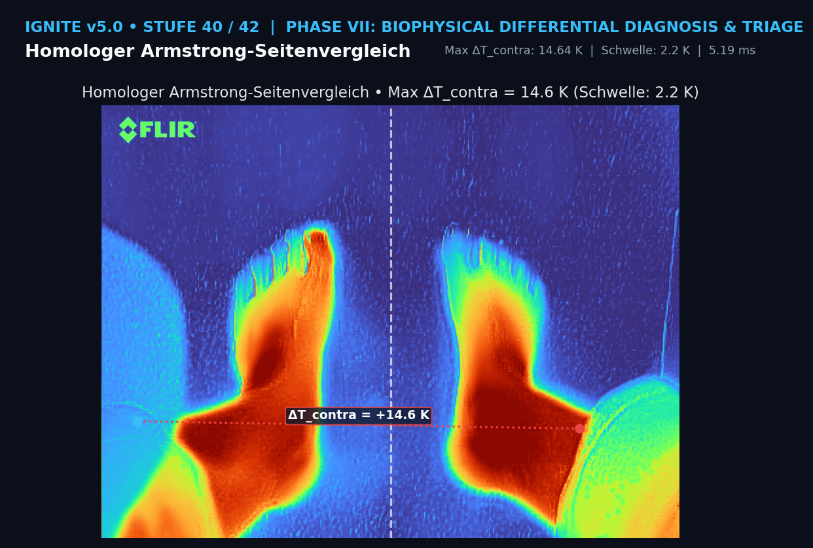
\Delta T_{\text{contra}} = |T_{\text{links}}(x, y) - T_{\text{rechts}}(W - x, y)| \ge 2{,}2\,\text{K}
Berechnet die kontralaterale Temperaturdifferenz ΔT zwischen homologen Fußarealen gemäß Armstrong et al. (2007) und IWGDF (2023).
Muskelplateau-Differenzierung
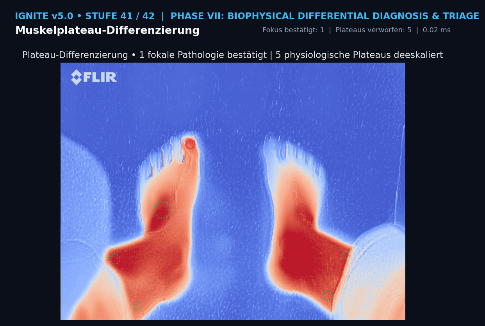
\text{Reject}(\mathcal{R}) \iff \Delta T_{\text{contra}} < 2{,}2\,\text{K} \lor (\text{HeelPlateau} \land \text{Bilateral})
Schließt symmetrische, großflächige Muskelbelastungswärme nach Gehen oder Stehen aus, um falsch-positive Alarme zu verhindern.
Klinische Triage & Armstrong-Regelengine
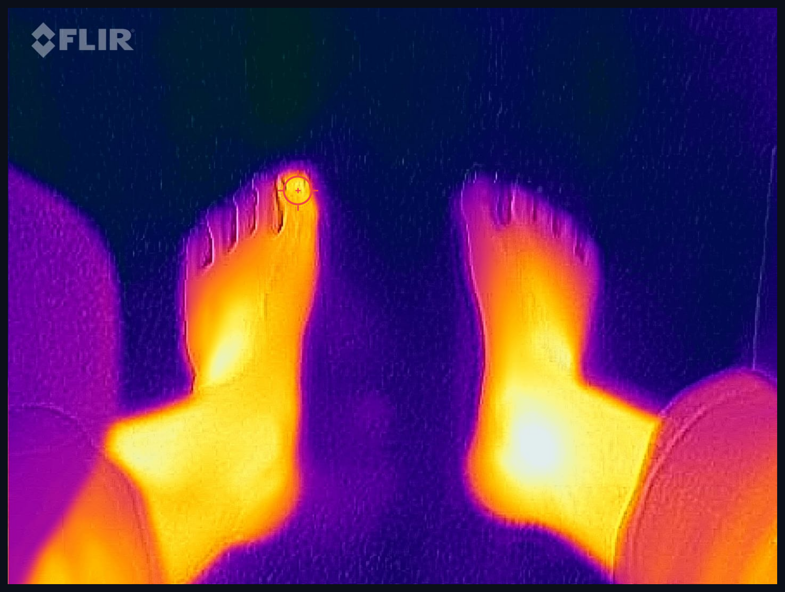
\text{Triage} = \begin{cases} \text{CRITICAL (Rot)} & \text{falls } \Delta T_{\text{contra}} \ge 2{,}2\,\text{K} \\ \text{MODERATE (Gelb)} & \text{falls } 1{,}2\,\text{K} \le \Delta T_{\text{contra}} < 2{,}2\,\text{K} \\ \text{BENIGN (Grün)} & \text{falls } \Delta T_{\text{contra}} < 1{,}2\,\text{K} \end{cases}
Synthese aller 41 Vorstufen zu einer evidenzbasierten ärztlichen Diagnose nach den internationalen IWGDF-Leitlinien und Armstrong-Kriterien.